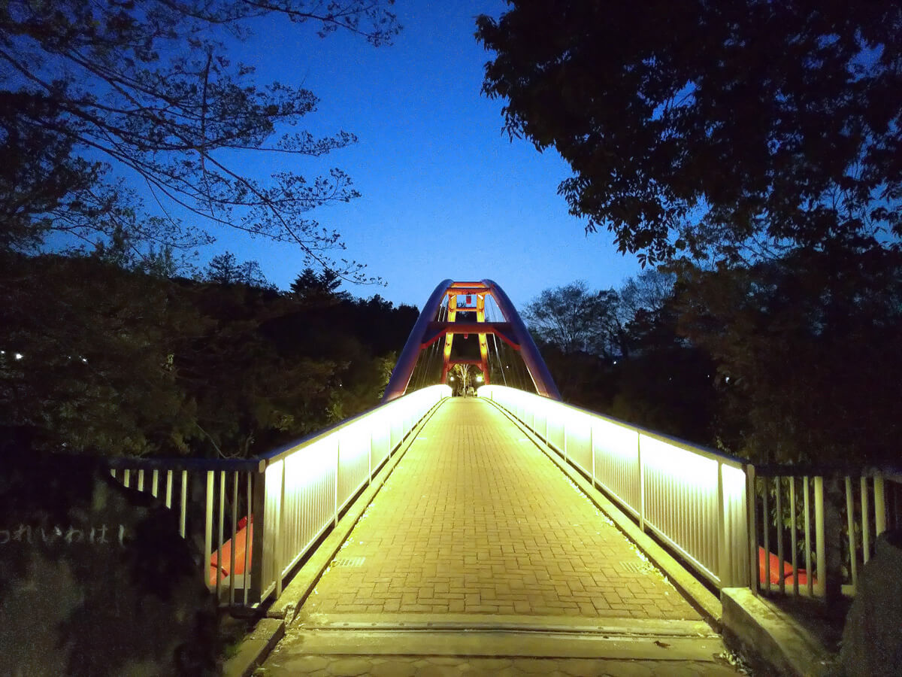
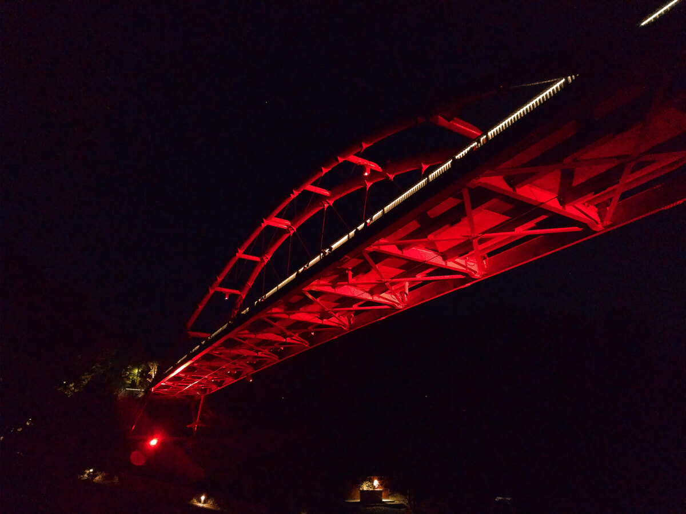
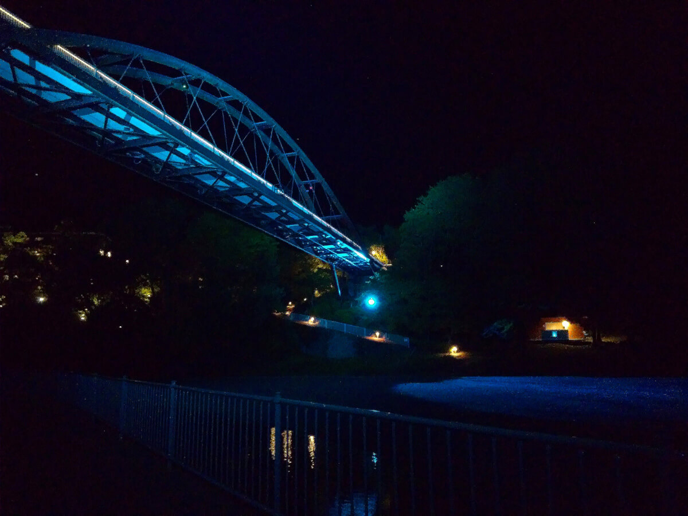
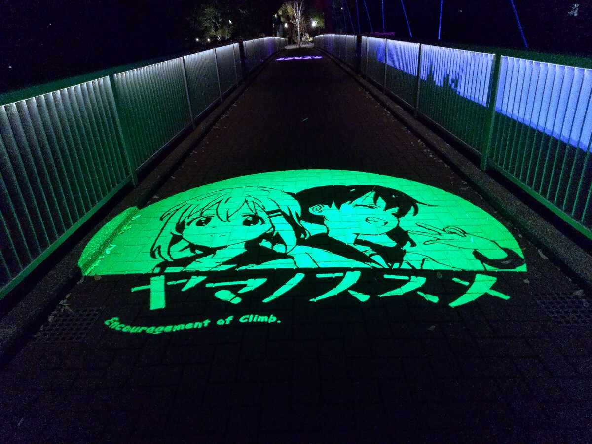
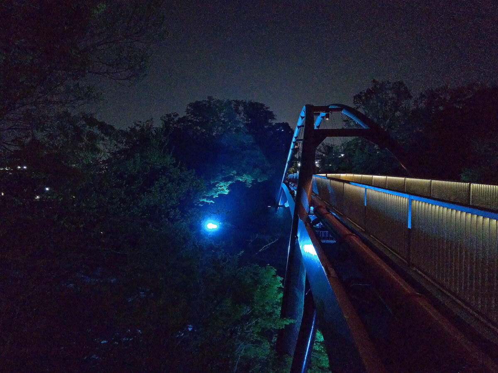

大自然の中で
非日常を
割岩橋ライトアップ
埼玉県飯能河原にある割岩橋（われいわばし）では日没後毎日、ライトアップを実施しています。
みどりと川に囲まれた自然の中で、幻想的な空間を体験してみませんか。


日中は川遊びやバーベキューでにぎわう飯能河原も、日が落ちると静けさに包まれます。
静寂の中でひっそりと行われるライトアップ演出が、ささやかな非日常をお届けします。

割岩橋では、橋の両端から直接河原へ降りることができます。
様々な場所からご覧いただき、ぜひお気に入りのポイントを見つけてください。
歩道部分には、飯能市のイメージキャラクターや四季折々の自然が投影されます。
スポットライトの中を歩いて橋を渡り、間近で演出をお楽しみください。


お越しの方へ
割岩橋では日没後から22：00まで、毎日ライトアップを実施しています。
下記の時間帯では、プロジェクターによる特別演出をお楽しみいただけます。※
19:00- 19:30- 20:00- 20:30- 21:00-
計5回、それぞれ12分間
※令和元年5月現在。
季節ごとに演出時間は変わります。詳しくは公式サイトをご確認ください。
割岩橋は西武池袋線飯能駅より徒歩10分です。
駐車場、駐輪場はございません。